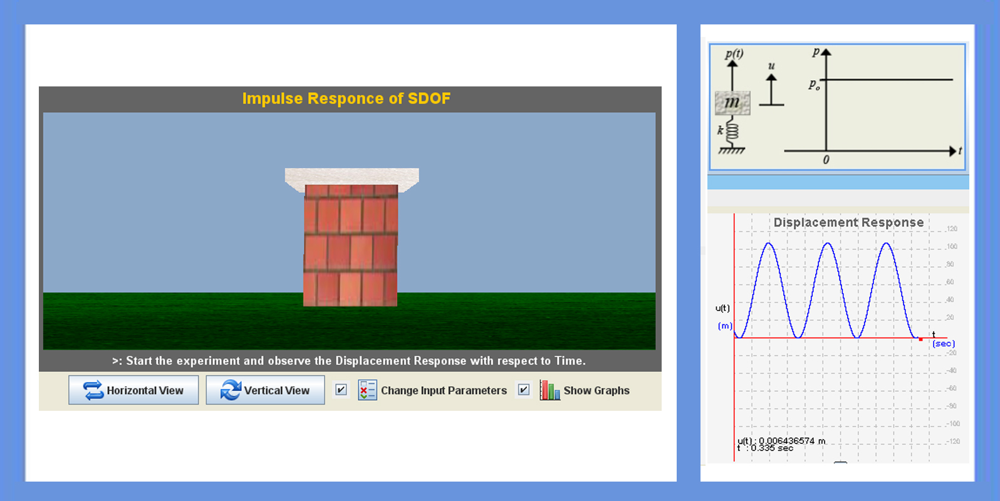
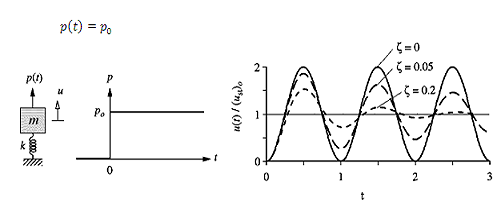

In many practical situations the dynamic excitation is neither harmonic nor periodic. The dynamic response of single degree of freedom systems to excitations varying arbitrary with time like Step force, Ramp or Linearly increasing force, Step force with finite rise time, Rectangular force and Half Sine pulse force. When a force is applied to a rigid body it changes the momentum of that body.


Here 6 types of Impulse forces are considered. They are,
1. Step force:
A step force jumps suddenly from zero to and stays constant at value. It is desired to determine the response of an undamped SDF system. Starting at rest to step force:


To determine the response of single degree of freedom system to arbitrary, step and pulse excitations.


Start the experiment with default values of mass and stiffness of SDOF for 'Step force' type. Total time for the experiment is 10 seconds and drop time is 4 seconds.
Stage 1:
In this stage, user can be allowed to change the type of force and force value along with damping value. Observe the response of SDOF with different types of forces.
Stage 2:
User can change all the dimensions related to mass and stiffness of SDOF along with force type and damping values. Observe the response of SDOF by changing all the parameters.
Go to Manual view on Impulse Response of S.D.O.F system(Click here)

Q1.
An impulse applied to a body causes its momentum to change and is equal to that change in momentum.
True
False
Q2.
Newton's third law applies, and the impulse on the colliding objects will be equal and opposite.
True
False
Q3.
Momentum is the product of the mass and acceleration of an object.
True
False
Q4.
During the force-rise phase the system oscillates at the natural period about the static solution
True
False
Q5.
If the velocity is zero at the end of the ramp, the system vibrates during constant-force phase
True
False

Procedure for the experiment is as follows.

- http://en.wikipedia.org/wiki/Impuls
- http://www.euclideanspace.com/physics/dynamics/collision/impulse/index.htm
- http://encyclopedia.farlex.com/Impulse+%28physics%29
- “Dynamics of structures” by Anil K chopra.